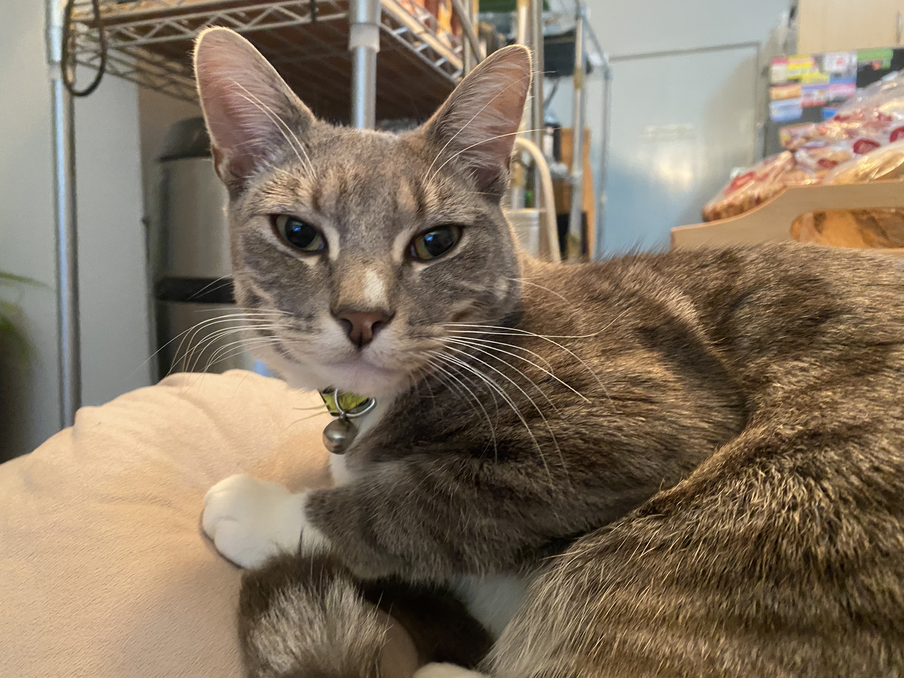

Born: 19/10/2024
Adopted: 02/01/2025
Age: 1.6 Years
Favorite Food: Felix Sensations Jellies Favourites & As Good As It Looks
Storm was adopted and taken home on my 14th Birthday, with Storm being about two months old at the time. I had never owned a pet before, with my parents owning several cats previously.